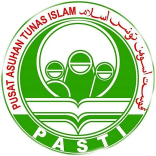
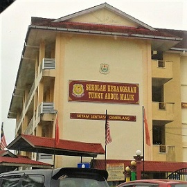
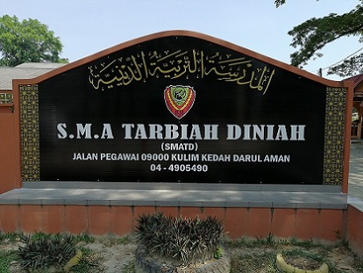
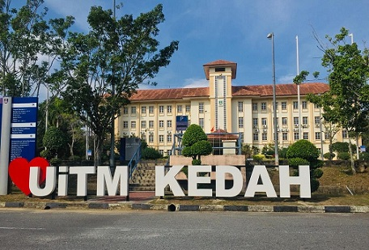

MY EDUCATION
For my education it started when I was 5 years old. My parents sending me to the kindergarten. I was schooling at PASTI near my house. At that time I learned to know how to memorise the short surah and doa. Then after 2 years, I move to primary school which is SKTAM. In 2012, I had taken the UPSR at the school and continue my journey as a student in secondary school. I studied at the school from 2007 until 2012.
After 6 years I move to the secondary school which is SMATD. In 2015, everyone in form 3 obligatory to take the PT3 examination included myself. Since that school is an islamic school, In 2016 I had taken the SMRA examination. The examination is more to the arabic subject. Next in 2017 is the biggest year as a student to take the SPM examination. Then in 2018 I had taken STAM examination. I studied in secondary school since 2013 until 2018.
Last but not least, after I finished my school I decided to fill out the university admission form at the end of 2018. I had choosen Information Management course to carry out in the university my SPM result to check in the UiTM. In almost 3 years I studying at the university, a lot of information that I know about Information Management course and had a softskills to used in making assignment such as Adobe Illustrator, Photoshop, In-Design, and Adobe Premiere Pro. The information that I had in univereity and skills can be use in the future also.



